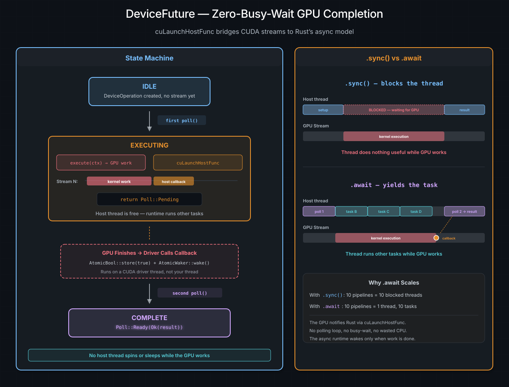

Scheduling and Streams#
The previous chapters built up a vocabulary for describing GPU work –
DeviceOperations, and_then chains, zip! bundles. But a description is
not execution. At some point, the recipe has to reach a kitchen. This chapter
is about the kitchens: what CUDA streams are, how cuda-oxide’s scheduling
policies assign work to them, and what happens behind the scenes when a
DeviceOperation becomes a running DeviceFuture.
Ver también
CUDA Programming Guide – Streams for the underlying CUDA stream semantics that scheduling policies build on.
Checkout lanes#
Think of a CUDA stream as a checkout lane at a grocery store. Each lane processes customers in order – whoever is first in line gets served first. But multiple lanes operate independently, so lane 1 can ring up a customer while lane 2 bags a different order. The store gets more throughput because work on different lanes overlaps in time.
A GPU works the same way. A stream is an in-order queue of operations. Within a single stream, everything executes sequentially – kernel A finishes before kernel B starts. But if you put kernel A on stream 0 and kernel B on stream 1, they can overlap on the hardware:
Stream 0: ┌─── Kernel A ───┐
└────────────────┘
Stream 1: ┌─── Kernel B ───┐
└────────────────┘
◄─── time ────────────────►
With one stream, everything is serial. With multiple streams, independent work overlaps and the GPU stays busier. This is the fundamental mechanism for concurrency on the GPU.
Why you rarely touch streams directly#
In CUDA C++, the programmer creates streams, decides which stream each operation goes on, and manually inserts events when work on one stream depends on results from another. This is powerful but tedious, and it couples every function to a specific concurrency strategy.
cuda-oxide inserts a layer of indirection: the scheduling policy. Instead
of choosing a stream yourself, you hand your DeviceOperation to the policy,
and it picks the stream for you. This means the same pipeline can run on a
single stream (for debugging), a pool of four streams (for throughput), or a
custom policy you write yourself – all without changing the pipeline code.
The SchedulingPolicy trait#
A scheduling policy answers one question: «given this operation, which stream should it run on?» The trait has three methods:
init– called once at startup to create the CUDA streams.schedule– picks a stream and wraps the operation in aDeviceFuturefor.await.sync– picks a stream, executes the operation, and blocks until it finishes.
The policy is Sync, meaning a single instance is shared across all operations
on a device. Stream selection must be thread-safe.
StreamPoolRoundRobin – the default#
When you call init_device_contexts(0, 1), cuda-oxide creates a
StreamPoolRoundRobin with four CUDA streams. Every time an operation is
scheduled, an atomic counter advances and the next stream in the pool is
selected:
Operation 1 → Stream 0 ──► ████████
Operation 2 → Stream 1 ──► ████████ (overlaps 1)
Operation 3 → Stream 2 ──► ████████ (overlaps 1, 2)
Operation 4 → Stream 3 ──► ████████
Operation 5 → Stream 0 ──► ████████ (waits for 1)
The selection is lock-free – a single fetch_add on an AtomicUsize,
modulo the pool size. The overhead is negligible compared to the cost of GPU
work.
Four streams is a good default. It gives the GPU enough in-flight work to overlap kernel execution with memory transfers, without excessive context- switching overhead. For most workloads, you will never need to think about it – the policy just works.
When round-robin shines#
Batched inference: Each batch is an independent pipeline. Round-robin distributes batches across streams, overlapping compute.
Mixed compute + transfer: While one stream runs a kernel, another copies data. The GPU’s copy engines and compute units work simultaneously.
Many small kernels: Overlapping launch overhead reduces the gap between kernels, keeping the GPU busier.
When to reconsider#
Dependency-heavy chains: If you build a single
and_thenchain (like the forward pass in the previous chapter), the chain runs entirely on one stream anyway. Round-robin only matters when you schedule multiple independent operations.Very large kernels: A single kernel that saturates the GPU gains nothing from multi-stream scheduling. The extra streams sit idle.
SingleStream – one lane, strict order#
Nota
SingleStream is implemented in the scheduling internals but is not
currently wired into GlobalSchedulingPolicy or exposed through
init_device_contexts. The default setup always uses StreamPoolRoundRobin.
This section describes the design intent for a future API surface.
For debugging, or when you need guaranteed ordering across all operations,
SingleStream routes everything to one stream. Every operation sees the results
of every previous operation, eliminating any possibility of stream-related
concurrency bugs:
Operation 1 → Stream 0 ──► ████████
Operation 2 → Stream 0 ──► ████████ (waits for 1)
Operation 3 → Stream 0 ──► ████████
Truco
If you suspect a concurrency bug in your GPU pipeline, switching to
SingleStream is the fastest way to check. If the bug disappears, it was a
missing dependency between operations on different streams. If it persists,
the problem is elsewhere.
Setting up the runtime#
Before any async operation can run, you initialize the thread-local device context:
use cuda_async::device_context::init_device_contexts;
init_device_contexts(0, 1)?;
The first argument is the default GPU ordinal; the second is how many devices to
manage. Under the hood, this registers a thread-local that lazily creates a
StreamPoolRoundRobin for each device on first use. The pool holds four streams
by default.
Call this once at the start of your program, before any .sync() or .await.
Calling it twice on the same thread returns an error.
What happens when you .await#
{kind=link}

Left: the DeviceFuture three-state machine. On the first poll, GPU work and a
cuLaunchHostFunc callback are submitted — then Poll::Pending is returned.
When the GPU finishes, the callback sets an AtomicBool and wakes the task.
On the second poll, the result is delivered. Right: comparison of .sync()
(thread blocked the entire time) vs .await (thread runs other tasks while
the GPU works).#
Here is the full journey of an operation from construction to completion:
module.kernel_async(&prepared, ...) ← build a checked recipe (no GPU work)
│
▼
AsyncKernelLaunch ← a DeviceOperation, lazy and stream-agnostic
│
│ .await
▼
IntoFuture::into_future() ← scheduling policy picks a stream
│
▼
DeviceFuture ← bound to a stream, ready for polling
│
│ first poll()
▼
execute() on stream 2 ← GPU work is submitted
cuLaunchHostFunc on stream 2 ← host callback enqueued after the kernel
return Poll::Pending
│
│ ... GPU is working, host thread is free ...
│
│ callback fires on a CUDA driver thread
│ → sets AtomicBool, wakes AtomicWaker
│
│ second poll()
▼
return Poll::Ready(Ok(())) ← result delivered to the caller
The key insight is that between the first poll() and the callback, no host
thread is occupied. The async runtime parks the task and runs other tasks.
The GPU notifies the runtime when it is done, via the cuLaunchHostFunc
callback. This is why .await scales better than .sync() for concurrent
workloads – you can have dozens of in-flight operations without tying up a
thread for each one.
Manual stream control#
Most of the time, the scheduling policy handles streams for you. But there are situations where you need direct control – interop with a CUDA library that expects a specific stream, fine-grained overlapping of compute and transfers, or profiling a single kernel in isolation. cuda-oxide exposes the full stream API for these cases.
Creating streams#
let ctx = CudaContext::new(0)?;
let default = ctx.default_stream(); // the per-context default (null) stream
let custom = ctx.new_stream()?; // a new non-blocking stream
The default stream has special synchronization semantics in CUDA (it implicitly
serializes with most other streams). Non-blocking streams created by
new_stream() do not have this constraint, which is why the scheduling policy
uses them exclusively.
Fork and join#
A common pattern is to fork a child stream from a parent, run independent work
on the child, and join the results back. fork creates a new stream with an
implicit dependency on the parent’s current position – the child will not start
until all prior work on the parent finishes. join does the reverse: the parent
waits for the child to finish before proceeding.
let main = ctx.default_stream();
// Upload data on main
let buf_a = DeviceBuffer::from_host(&main, &data_a)?;
let buf_b = DeviceBuffer::from_host(&main, &data_b)?;
// Fork: children see the uploads
let child_1 = main.fork()?;
let child_2 = main.fork()?;
// SAFETY: cfg matches process's indexing/resources and both buffers' bounds.
// Run independent work in parallel.
unsafe {
module.process(&child_1, cfg, &mut buf_a)?;
module.process(&child_2, cfg, &mut buf_b)?;
}
// Join: main waits for both children
main.join(&child_1)?;
main.join(&child_2)?;
// SAFETY: cfg matches combine's indexing/resources and both input bounds.
unsafe { module.combine(&main, cfg, &buf_a, &buf_b) }?;
The GPU timeline for this looks like:
main: ██ upload_a ██ upload_b ██ ──fork──────────────── join ──► ██ combine ██
| ^ ^
child_1: └─► ██ process_a ██ ─┘ |
| |
child_2: └─► ██ process_b ██ ────┘
Under the hood, fork and join use CUDA events – cuEventRecord on one
stream, cuStreamWaitEvent on another. The events are GPU-side synchronization
tokens; no host thread blocks during the fork or the join.
Events for fine-grained ordering#
When fork/join is too coarse, you can use events directly to establish
ordering between specific points in different streams:
// Record an event on stream A after the kernel finishes
let event = stream_a.record_event(None)?;
// Stream B waits for that specific point before proceeding
stream_b.wait(&event)?;
A CUDA event is not owned by a stream – it is a standalone synchronization
token. record stamps it at a specific point on one stream; wait inserts a
dependency into another stream. The event is the rendezvous point: nothing
after the wait on stream B runs until the event fires on stream A.
Events are also the standard way to measure GPU execution time. Note that
timing requires events created without CU_EVENT_DISABLE_TIMING – pass
explicit flags to enable timing:
use cuda_bindings::CUevent_flags_enum::CU_EVENT_DEFAULT;
let start = stream.record_event(Some(CU_EVENT_DEFAULT))?;
// SAFETY: config and arguments satisfy my_kernel's requirements.
unsafe { module.my_kernel(&stream, config) }?;
let end = stream.record_event(Some(CU_EVENT_DEFAULT))?;
end.synchronize()?;
println!("Kernel took {:.2} ms", start.elapsed_ms(&end)?);
This measures actual GPU time, not host-side scheduling overhead. record_event(None) creates timing-disabled events by default, which cannot be used with elapsed_ms.
Truco
For everyday async pipelines, you never need to create streams, events, or
fork/join manually. The scheduling policy and and_then chains handle
ordering automatically. The manual API exists for interop, profiling, and
advanced optimization.
Choosing the right approach#
Situation |
Recommended approach |
|---|---|
Simple script, one contracted kernel |
|
Multi-stage pipeline (GEMM → ReLU → D2H) |
|
Independent batches running concurrently |
|
Debugging a suspected stream-ordering bug |
Switch to |
Interop with an existing CUDA library |
|
Profiling a kernel in isolation |
Explicit events around the launch |
Maximum throughput |
Profile with Nsight Systems, tune pool size |
Ver también
CUDA Programming Guide – Events for the full specification of CUDA events. The Concurrent Execution chapter shows these scheduling concepts applied to real multi-batch workloads.